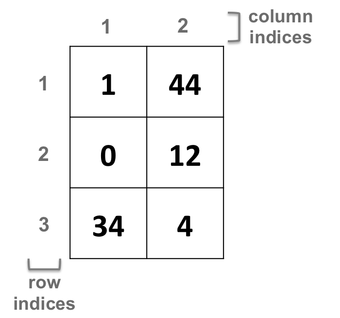
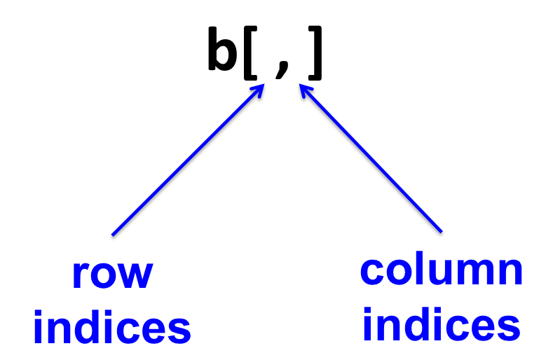

13.2 Two-dimensional object
Vectors have one index per element (1-dimension).
Matrices have two indices (2-dimensions) per element, corresponding to the row and the column:

- Fetching elements of a matrix:
The “coordinates” of an element in a 2-dimensional object will be first the row (on the left of the comma), then the column (on the right of the comma):
